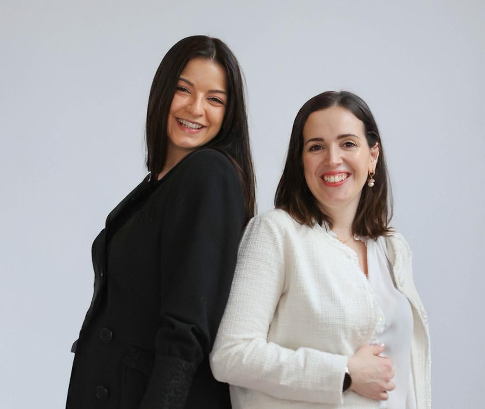

Temporada 1
17 episódios para ouvir do início ao fim
A primeira temporada está completa. Ouve quando quiseres, ao teu ritmo, em qualquer plataforma.
Podcast · PT · Saúde reprodutiva
Esperas infinitas, exames complexos, tratamentos de PMA, insucessos e finais felizes. Relatos na 1.ª pessoa, a ciência aliada à emoção, sem tabus.
Duas linhas
17 episódios para ouvir do início ao fim
A primeira temporada está completa. Ouve quando quiseres, ao teu ritmo, em qualquer plataforma.
Estreia em 2027
Estamos neste momento em estúdio, a gravar novas conversas e novos testemunhos. A segunda linha está a aparecer, e queremos que sejas das primeiras pessoas a saber.
Avisa-me da estreiaSobre o podcast
Uma Médica Ginecologista especialista em Procriação Medicamente Assistida e uma Psicóloga dedicada à saúde sexual e reprodutiva das Mulheres cruzaram caminhos num gabinete e descobriram uma missão conjunta: quebrar o silêncio sobre a Infertilidade.
As taxas de Infertilidade estão a aumentar, e quanto mais falarmos sobre tudo o que envolve este processo, mais fácil o caminho se poderá tornar para o próximo.
O nome vem da β-hCG, a hormona da gravidez, pedida após um tratamento de fertilidade para comprovar o seu resultado. Torna-se assim símbolo de espera, desafio, confirmação, ansiedade, medo, dúvida e resiliência.
Neste caminho vivem sempre dois lados silenciosos:
Quem somos
Duas profissionais de saúde com uma única missão: dar voz ao que é tantas vezes silenciado.

Médica especialista em Ginecologia e Obstetrícia, com diferenciação em Medicina da Reprodução. Tem dedicado a sua prática à área da fertilidade, acompanhando pessoas e casais ao longo de processos muitas vezes marcados por incerteza, frustração e ineficiência.
Acredita que a medicina não se esgota no diagnóstico ou no tratamento, e que a literacia em saúde é uma ferramenta essencial para devolver autonomia e capacidade de decisão a quem enfrenta dificuldade para conseguir o seu "bebé em casa".
O seu trabalho foca-se na desmistificação da infertilidade, na quebra de tabus e na tradução do conhecimento científico em informação acessível. Mais do que tratar, a sua missão é informar, capacitar e humanizar a experiência da fertilidade.
Tem dedicado a sua carreira à Saúde da Mulher, nomeadamente à Saúde Sexual e Reprodutiva. Acredita que a saúde não se esgota num diagnóstico clínico e promove a capacidade de recuperar a agência sobre o próprio corpo, as suas escolhas e o seu percurso de vida.
O seu trabalho foca-se no impacto profundo que condições como Endometriose, Adenomiose e Infertilidade exercem na identidade, na autoestima, nas relações e nos projetos de vida.
Mais do que gerir sintomas, a sua missão é facilitar o ajustamento psicológico, permitindo a cada pessoa reencontrar o seu bem-estar emocional, propósito, identidade e prazer, independentemente do diagnóstico.
Episódios
Cada episódio conta uma história única, com a complexidade de cada percurso e a singularidade emocional vivida dentro de cada coração.
Listas de espera, imprevistos, insucessos e o tempo que não espera.
Diagnósticos, tratamentos de 1.ª e 2.ª linha e respetivos critérios de adesão.
Histórias diferentes, narradas na 1.ª pessoa.
Literacia clínica sobre saúde menstrual e reprodutiva, com rigor, sensibilidade e acessibilidade.
O impacto emocional nas mais diversas etapas da experiência de Infertilidade.
Onde a evidência científica encontra a experiência humana.
Temporada 2 · 2027
Deixa o teu e-mail e avisamos-te no dia em que a Temporada 2 estrear. Até lá, a Temporada 1 está completa à tua espera.
Obrigada! Vamos avisar-te quando a Temporada 2 estrear.